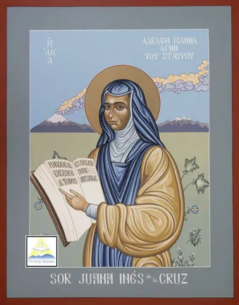

What Sor Juana Teaches Us About Rhetoric, Voice, and Power
You can speak.
But be calm.
Be polite.
Be professional.
Say it the right way.
These expectations often appear harmless, even helpful, yet they quietly shape who gets taken seriously and whose ideas are dismissed before they are even considered.
Rhetoric is often reduced to manipulation or empty persuasion, as though it were simply a set of tricks used to win arguments. But rhetoric is also about something far more fundamental: how voices are recognized, how ideas become acceptable, and how power determines what can be said and how it must be said.
This is not a new condition because centuries ago, Sor Juana Inés de la Cruz faced the same tension, navigating a world in which her ability to think and write was not in question, but her right to do so was.
This project explores what her life and writing reveal about rhetoric, voice, and the conditions that still shape who gets to be heard.
Who Was Sor Juana?
Sor Juana Inés de la Cruz was a seventeenth-century writer, scholar, and nun in colonial New Spain, a society in which intellectual life was closely tied to religious authority and largely reserved for men. Despite these restrictions, she pursued knowledge with remarkable intensity, educating herself through extensive reading and becoming known for her intellectual range and depth.
Her writing moves across poetry, philosophy, and theology, and she engaged with questions that were typically considered outside the domain of women’s participation. Although she gained recognition for her intellect, that recognition did not translate into full acceptance. She remained situated within a system that valued her brilliance but also placed clear boundaries on how and when she could express it.
As scholars such as Octavio Paz have shown, her life and work were shaped by the tensions between intellectual ambition and institutional constraint.
The Problem
For Sor Juana, the central difficulty was never a lack of ideas; however, it was the challenge of making those ideas acceptable within a system that did not fully recognize her authority to speak.
In colonial New Spain, intellectual and theological discourse was shaped by the Catholic Church and by institutions that were overwhelmingly male. Women were expected to embody obedience and modesty, not intellectual ambition.
Watch: Sor Juana’s Life and Struggle
This short video introduces Sor Juana’s life and the tensions she faced as a woman writing within a restrictive intellectual and religious system. It shows how her work was shaped not only by what she wanted to say, but by what she was permitted to say.
How She Made Herself Heard

Rather than responding with direct confrontation, Sor Juana approached this situation with careful rhetorical judgment.
“I do not study to know more, but to ignore less.”
She adopted a posture of humility, repeatedly emphasizing her limitations and presenting herself as a learner rather than an authority.
What This Teaches Us About Rhetoric
Sor Juana’s work invites us to reconsider what rhetoric actually involves. It is often understood as the art of persuasion, yet her writing shows that persuasion is only one part of a larger process.
Before an argument can persuade, it must first be recognized as legitimate.
Today’s World and Rhetoric
The conditions Sor Juana navigated have not disappeared; they have taken on new forms.
Pause and Reflect
Think about a moment when you had something important to say, but felt the need to adjust your tone, language, or delivery before speaking.
What did you change, and why?
Final Insight
Sor Juana’s legacy extends beyond her writing.
Rhetoric is not only concerned with persuasion, but with power, legitimacy, and the conditions that determine whose voice is recognized as meaningful.
You can speak.
But not like that.
Works Cited
Sor Juana Inés de la Cruz. The Answer / La Respuesta.